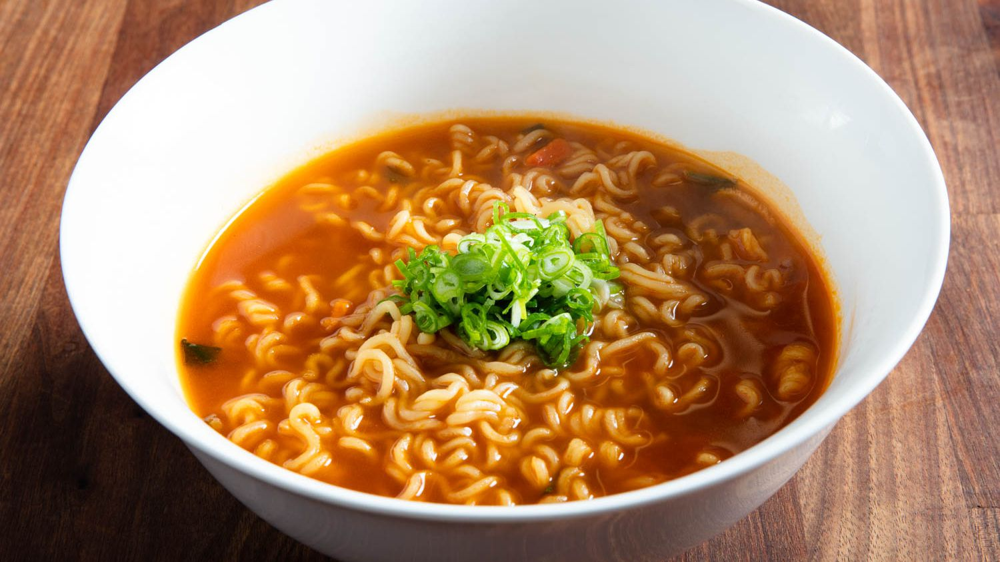

Don't have time to cook a delicious meal because—work? Thanks to this recipe you don't have to give a noodle anymore!
Try to name any 4,000 years old recipe, difficult right? Well, now you know at least one. Your friends won't see it coming at the next pub quiz. Noodles precede almost any invention still in use, like electrical cars, medium-rare steaks or hot air balloons. They are yummy, but also the main force behind the Japanese economy. Thanks to instant noodles millions of salaryman are able to give their best everyday.